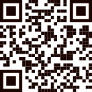

Vorschlag zu E-S4-15/E-S4-16: QR-Code neben dem Kopplungscode und der APK-Download als eigene Karte, beides unter Einstellungen → Geräte.
Erzeuge einen Code und gib ihn auf dem Gerät ein. Das Gerät holt sich seine Zugangsdaten dann selbst — kein Abtippen langer Schlüssel. Der Code ist 10 Minuten gültig und genau einmal verwendbar; ein neuer macht einen vorher erzeugten ungültig.
In der Handy-App: Koppeln → QR-Code scannen — oder Server-Adresse und Code von Hand eingeben. Auf Garmin-Uhren führt die Sync-Seite zum Koppeln; die Tastenwege stehen im Handbuch, Abschnitt 2.0.
Kopplungscode
K7M4QP
Gültig bis 14:32 Uhr. Das Gerät erscheint nach der Kopplung unten in der Liste.

Die Handy-App zeichnet die Spur des Dienstes auf und dokumentiert die Einsatzphasen — am Handy oder an einer verbundenen Wear-OS-Uhr. Sie wird hier verteilt, nicht über einen App-Store.
SHA-256:
3f9c 1b7a 92e4 0d5f 8c21 6a0e b374 d9c8 4f02 7e51 a6b3 908d 2c4e f1a7 55d0 8b19
— wer der Seite nicht traut, rechnet die Prüfsumme der heruntergeladenen
Datei nach.
Beim ersten Öffnen fragt Android nach, ob Installationen aus dieser Quelle erlaubt sind — das ist bei einer Verteilung ohne App-Store der vorgesehene Weg.
server/apk/, vom Deploy ausgenommen wie
config.php); Version, Größe und Prüfsumme liest die Seite aus der
Datei — nichts davon wird von Hand gepflegt.